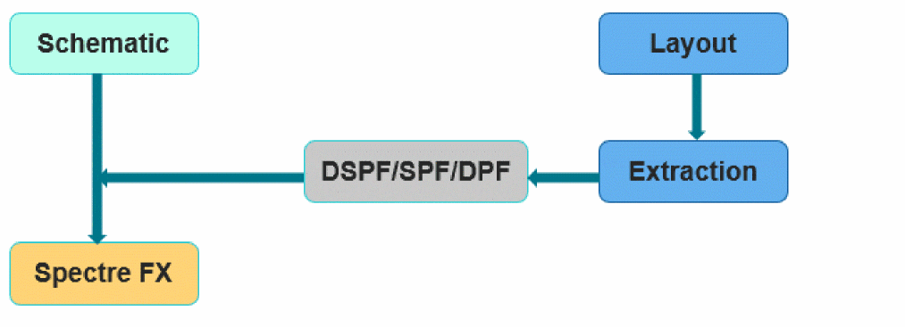
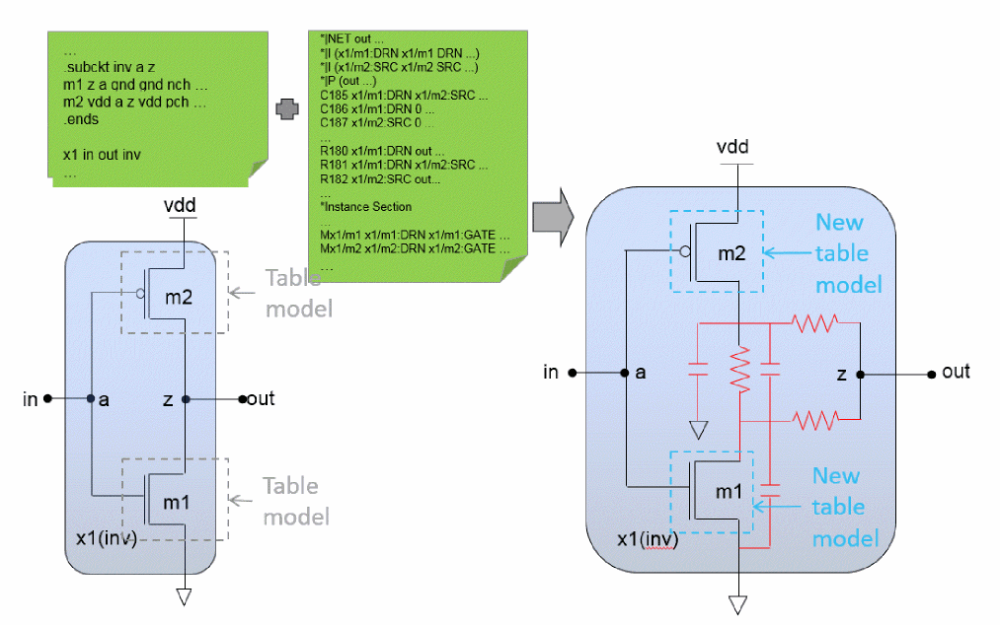

The Parasitic Backannotation Flow
The following figure shows the parasitic backannotation flow:


The simulation database is built upon the pre-layout netlist, as shown at the left of the figure. The parasitics from the parasitic files (DSPF/SPF/DPF) are backannotated into the database, as shown at the right. The hierarchy and the net names from the pre-layout netlist are retained, and the device models are regenerated according to the device parasitic information (DPF/Instance Section from the DSPF). The nodes are backannotated with R and C from the DSPF/SPF Net section.
Related Topics
Post-layout Simulation Methodologies
Control Options for the Parasitic Backannotation Flow
Return to top